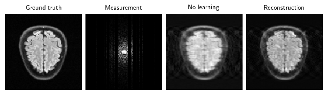

Datasets: the full FastMRI dataset :class:deepinv.datasets.FastMRISliceDataset and a lightweight, easy-to-use subset :class:deepinv.datasets.SimpleFastMRISliceDataset
Models: :class:deepinv.models.VarNet (VarNet/E2E-VarNet), :class:deepinv.utils.demo.demo_mri_model (a simple MoDL unrolled model)
Contents: 1. Get started with FastMRI (singlecoil + multicoil) 2. Train an accelerated MRI with neural networks 3. Load raw FastMRI data (singlecoil + multicoil) 4. Train using raw data 5. Explore 3D MRI 6. Explore dynamic MRI
import deepinv as dinvimport torch, torchvisiondevice = dinv.utils.get_freer_gpu if torch.cuda.is_available() else"cpu"rng = torch.Generator(device=device).manual_seed(0)
c:\Users\s2558406\Documents\Repos\deepinv\venv\lib\site-packages\tqdm\auto.py:21: TqdmWarning: IProgress not found. Please update jupyter and ipywidgets. See https://ipywidgets.readthedocs.io/en/stable/user_install.html
from .autonotebook import tqdm as notebook_tqdm
1. Get started with FastMRI
You can get started with our simple FastMRI slice subsets which provide quick, easy-to-use, in-memory datasets which can be used for simulation experiments.
.. important::
By using this dataset, you confirm that you have agreed to and signed the `FastMRI data use agreement <https://fastmri.med.nyu.edu/>`_.
Load knee and brain datasets (original data is 320x320 but we resize to 128 for speed):
Define single-coil MRI physics. We can define a constant Cartesian 4x undersampling mask by sampling once from a physics generator. The mask, data and measurements will all be of shape (B, C, H, W) where C=2 is the real and imaginary parts.
You can also simulate multicoil MRI data. Either pass in ground-truth coil maps, or pass an integer to simulate simple birdcage coil maps. The measurements y are now of shape (B, C, N, H, W), where N is the coil-dimension.
2. Train an accelerated MRI problem with neural networks
Train a neural network to solve the inverse problem. We provide various models specifically used for MRI reconstruction. These are unrolled networks which require a denoiser, such as UNet or DnCNN as a backbone:
model = dinv.models.VarNet(denoiser, num_cascades=2, mode="varnet").to(device)model = dinv.utils.demo.demo_mri_model(denoiser, num_iter=2, device=device).to(device)
Train a network with supervised or self-supervised (using Equivariant Imaging) loss.
For speed, we only use a very small 2-layer DnCNN inside a unrolled network with 2 cascades, and train with 5 images for 1 epoch, but load a pretrained model that has been trained with 10 images for 50 epochs:
Eval epoch 0: PSNR=30.229, PSNR no learning=28.409
Test results:
PSNR no learning: 28.409 +- 1.409
PSNR: 30.229 +- 1.556

3. Load raw FastMRI data
The raw multi-coil FastMRI data is provided as pairs of (x, y) where y are the fully-sampled k-space measurements of arbitrary size, and x are the cropped root-sum-square (RSS) magnitude reconstructions.
#dinv.datasets.download_archive(dinv.utils.get_image_url("fastmri_brain_multicoil_train_0.h5"), dinv.utils.get_data_home() / "brain" / "fastmri.h5")dataset = dinv.datasets.FastMRISliceDataset(dinv.utils.get_data_home() /"brain", slice_index="middle")x, y = dataset[0]x, y = x.unsqueeze(0), y.unsqueeze(0)print("Shapes:", x.shape, y.shape) # x (B, 1, W, W); y (B, C, N, H, W)img_shape, kspace_shape = x.shape[-2:], y.shape[-2:]n_coils = y.shape[2]
We can relate x and y using our :class:deepinv.physics.MultiCoilMRI (note that since we aren’t provided with the ground-truth coil-maps, we can only perform the adjoint operator).
We now use a mask generator to generate acceleration masks on-the-fly (“online”) during training. We use the E2E-VarNet model designed for multicoil MRI. We do not perform coil sensitivity map estimation and simply assume they are flat as above. To do this yourself, pass a model as the sensitivity_model parameter.
model = dinv.models.VarNet(denoiser, num_cascades=2, mode="e2e-varnet").to(device)
Note that we require overriding the base :class:deepinv.training.Trainer to deal with raw measurements, as we do not want to generate k-space measurements, only mask it.
.. note ::
We require `loop_physics_generator=True` and `shuffle=False` in the dataloader to ensure that each image is always matched with the same random mask at each iteration.
class RawFastMRITrainer(dinv.Trainer):def get_samples_online(self, iterators, g):# Get data x, y =next(iterators[g]) x, y = x.to(self.device), y.to(self.device)# Get physics physics =self.physics[g]# Generate random mask params =self.physics_generator[g].step(batch_size=y.size(0), img_size=y.shape[-2:])# Generate measurements directly from raw measurements y *= params["mask"] physics.update_parameters(**params)return x, y, physics
We also need to modify the metrics used to crop the model output when comparing to the cropped magnitude RSS targets:
C:\Users\s2558406\Documents\Repos\deepinv\deepinv\training\trainer.py:192: UserWarning: Generated measurements repeat each epoch. Ensure that dataloader is not shuffling.
warnings.warn(
c:\Users\s2558406\Documents\Repos\deepinv\venv\lib\site-packages\torch\nn\modules\loss.py:535: UserWarning: Using a target size (torch.Size([1, 1, 320, 320])) that is different to the input size (torch.Size([1, 1, 20, 320, 320])). This will likely lead to incorrect results due to broadcasting. Please ensure they have the same size.
return F.mse_loss(input, target, reduction=self.reduction)
The model has 2372 trainable parameters
Train epoch 0: TotalLoss=0.783, CropPSNR=4.072
5. Explore 3D MRI
We use a demo 3D brain volume of shape (181, 217, 181) and simulate 3D single-coil or multi-coil Fourier measurements using :class:deepinv.physics.MRI or :class:deepinv.physics.MultiCoilMRI.
x = torch.from_numpy(dinv.utils.demo.load_np_url("https://huggingface.co/datasets/deepinv/images/resolve/main/brainweb_t1_ICBM_1mm_subject_0.npy?download=true")).unsqueeze(0).unsqueeze(0).to(device)x = torch.cat([x, torch.zeros_like(x)], dim=1) # add imaginary dimensionprint(x.shape) # (B, C, D, H, W) where D is depth
Finally, we show how to use the dynamic MRI for image sequence data of shape (B, C, T, H, W) where T is the time dimension. note that this is also compatible with 3D MRI. We simulate an MRI image sequence using the first 5 knees:
x = torch.stack([knee_dataset[i] for i inrange(5)], dim=1).unsqueeze(0)
Generate a Cartesian k-t sampling mask and simulate k-t-space measurements: